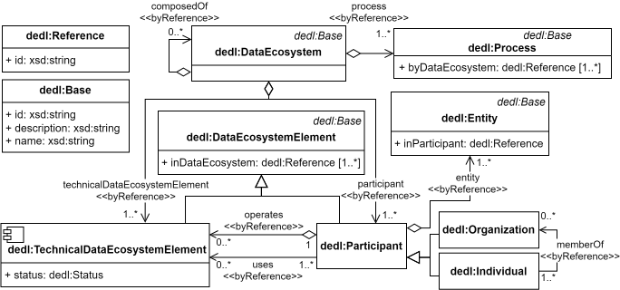

Data ecosystems (DEs) bring together autonomous actors that share data, services, and infrastructure across organisational boundaries. While numerous initiatives (e.g., data spaces, data trustees, IoT platforms) describe the business or governance aspects of DEs, there is currently no generic, technology‑agnostic language that captures both the system behaviour (the processes that occur in a DE) and the system architecture (the software components that realise those processes). This lack of an abstract, technical description hampers development, comparability and interoperability of DE solutions.
The Data Ecosystem Description Language (DEDL) addresses this gap by providing a lightweight, information‑model‑based ontology. DEDL defines a small set of core concepts—DataEcosystem, Participant, Process, TechnicalDataEcosystemElement and Entity—all inheriting from a common Base class that supplies the attributes id, name and description. Mandatory processes such as Transacting, Onboarding and Off‑boarding are modelled alongside optional processes (Publishing, Finding, Negotiating). Technical elements cover the essential building blocks of a DE, including Identity‑and‑Access‑Management, Audit‑And‑Logging, Storage, Communication, Interfaces (API, GUI, connector) and Run‑Time‑Environments.

By exposing both the behavioural and architectural dimensions of a data ecosystem in a single, extensible ontology, DEDL enables systematic engineering, comparison and integration of DE solutions—whether they are fully centralised, federated, or hybrid.